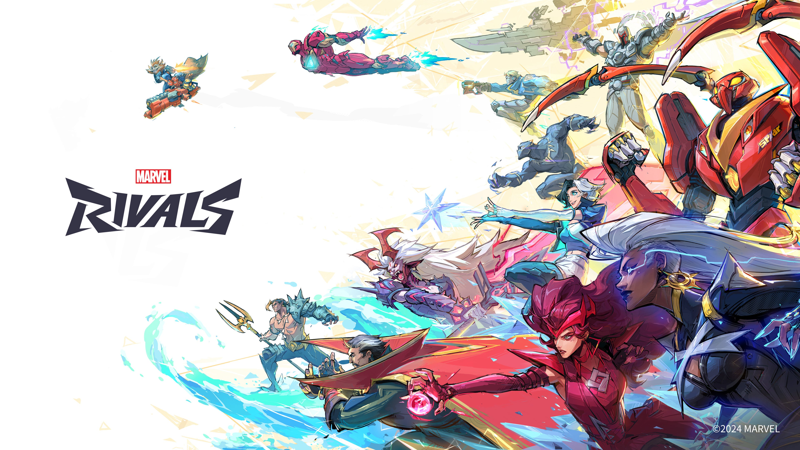

<!DOCTYPE html>
<html lang="pt">
<head>
    <meta charset="UTF-8">
    <meta name="viewport" content="width=device-width, initial-scale=1.0">
    <title>Conexão Gamer</title>

    <!-- Link para o Bootstrap -->
    <link href="https://cdn.jsdelivr.net/npm/bootstrap@5.0.2/dist/css/bootstrap.min.css" rel="stylesheet" integrity="sha384-EVSTQN3/azprG1Anm3QDgpJLIm9Nao0Yz1ztcQTwFspd3yD65VohhpuuCOmLASjC" crossorigin="anonymous">
    
    <!-- Link para o CSS do site -->
    <link rel="stylesheet" href="estilo4.css">

    <!-- Conexões para as fontes do Google Fonts -->
    <link rel="preconnect" href="https://fonts.googleapis.com">
    <link rel="preconnect" href="https://fonts.gstatic.com" crossorigin>
    <link href="https://fonts.googleapis.com/css2?family=Inter:ital,opsz,wght@0,14..32,100..900;1,14..32,100..900&family=Poppins:ital,wght@0,100;0,200;0,300;0,400;0,500;0,600;0,700;0,800;0,900;1,100;1,200;1,300;1,400;1,500;1,600;1,700;1,800;1,900&display=swap" rel="stylesheet">

    <!-- Link para o Font Awesome -->
    <link rel="stylesheet" href="https://cdnjs.cloudflare.com/ajax/libs/font-awesome/6.5.1/css/all.min.css">

    <!-- Ícone da página (Favicon) -->
    <link rel="icon" href="imgs/modelo_logomarca.png" sizes="1024x1024" type="image/x-icon">
    
    <!-- Ícone bootstrap -->
    <link rel="stylesheet" href="https://cdn.jsdelivr.net/npm/bootstrap-icons@1.11.3/font/bootstrap-icons.min.css">
  </head>


<body>
  </html>


  <header> 

    <nav class="nav-bar">     <!--  Incicio da barra -->
      <div class="logo">
        <section class="logo">
          <a href="index.html">  <!-- Link para a página inicial -->
            
          </a>
        </section>
        
      </div>

      <div class="nav-list">
        <ul>
          <!-- Alteração do link para ir até a seção "Últimas notícias" -->
            <!-- Link para a seção "Últimas notícias" na página inicial -->
          <li class="nav-item"><a href="index.html#ultimas-noticias" class="nav-link">Destaques</a></li>
          <li class="nav-item"><a href="Noticias.html" class="nav-link">Notícias</a></li>
          <li class="nav-item"><a href="Lancamentos.html" class="nav-link">Lancamentos</a></li>
          <li class="nav-item"><a href="Diversao.html" class="nav-link">Diversao</a></li>
        </ul>
      </div>

      <div class="login-button">
        <button><a href="#">Sobre</a></button>
    </div>

    <div class="mobile-menu-icon">
        <button onclick="menuShow()"></button>
    </div>
</nav>
<div class="mobile-menu">
  <ul>
<!-- Link para a seção "Últimas notícias" na página inicial -->
    <li class="nav-item"><a href="index.html" class="nav-link">Destaques</a></li>
    <li class="nav-item"><a href="Noticias.html" class="nav-link">Notícias</a></li>
    <li class="nav-item"><a href="Lancamentos.html" class="nav-link">Lancamentos</a></li>
    <li class="nav-item"><a href="Diversao.html" class="nav-link">Diversao</a></li>
  </ul>
  <div class="login-button">
    <button><a href="Sobre.html">Sobre</a></button>
  </div>
</div>
</div>
    </div>

  </header>  
  <div class="container" id="ultimas-noticias">
    <h2 class="ultimas-noticias">Marvel Rivals supera 440 mil jogadores em lançamento na Steam</h2>
<!-- Texto do anúncio -->
<p>
  O aguardado Marvel Rivals, da NetEase Games, está disponível para Xbox Series X|S, PlayStation 5 e PC.
De acordo com dados compartilhados pelo SteamDB, atingiu um impressionante pico de 444,2 mil jogadores simultâneos no lançamento, tendo a recepção "Principalmente Positiva", com 76% das 6,187 avaliações dando esse aval.
Ambientado em um conflito interdimensional entre duas variantes do Doutor Destino, traz 33 personagens jogáveis do Universo Marvel, incluindo heróis como Capitão América, Wolverine, Soldado Invernal, Punho de Ferro, Psylocke e Cavaleiro da Lua, além de vilões como Magneto, Loki, Venom, Hela e muitos outros.
Oferece oito mapas e quatro modos - Conquista, Dominação, Convergência e Comboio.
Sabemos que a Temporada 0, intitulada "A Ascensão dos Destinos", está em andamento.
Ao contrário de outros títulos, este será mais focado em combate corpo a corpo. Apenas personagens que tradicionalmente utilizam armas de fogo nos quadrinhos (como Justiceiro) terão esse fator.
Não há modo PvE.
Na trama, Doutor Destino e sua contraparte de 2099 causam uma colisão de universos no Enredo da Corrente Temporal, criando novos mundos. Super-heróis e vilões do multiverso devem se unir e lutar contra outros grupos de personagens para salvar toda a existência.

</p>

<!-- Imagem centralizada -->


  </div>

</section> <!-- Últimas notícias fim -->


<section class="socias">    <!-- rodape começo -->
  <div class="interface">

    <article class="txt-socias">
      <h3>Fique online conosco!</h3>
    </article>

    <article class="icons-socias">
      <a href="https://www.instagram.com/conex.aogamer?igsh=MWRkeXNmM211NjB4cg==" target="_blank">
        <button><i class="bi bi-instagram"></i> <p>Instagram</p></button>
      </a>
      <a href="https://x.com/ConexaoGamerOfc?s=08" target="_blank">
        <button><i class="bi bi-twitter-x"></i> <p>Twitter X</p></button>
        <a href="Coneexao.gameroficial@gmail.com" target="_blank">
          <button>
            <i class="bi bi-envelope-at"></i>
            <p>Email</p>
          </button>
        </a>
    </article>

  </div>
</section>   <!-- rodape fim -->
  
  <body>